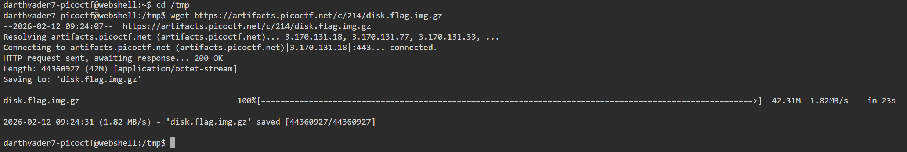
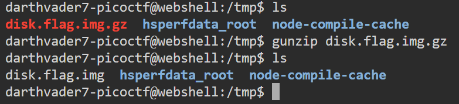
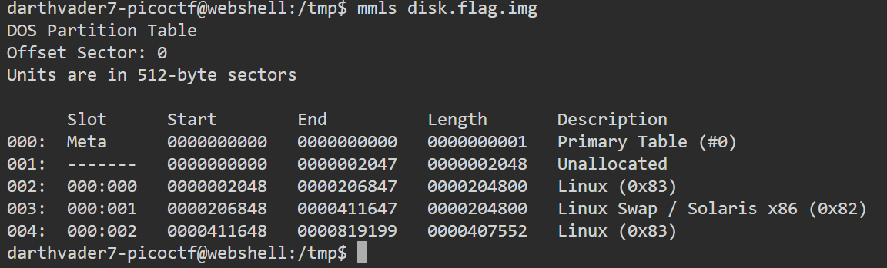
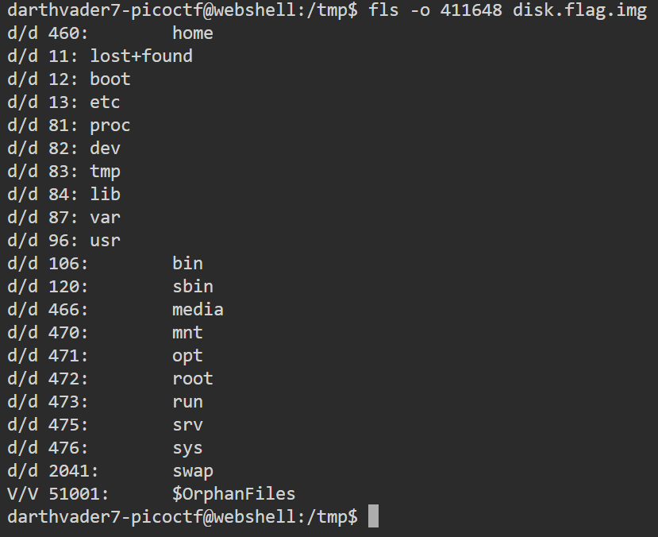
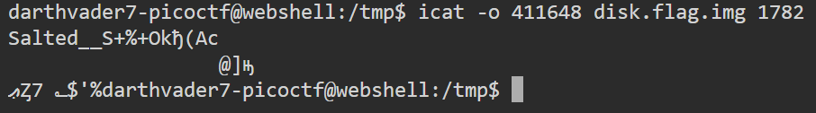
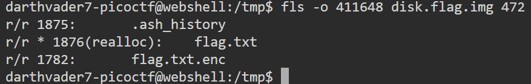
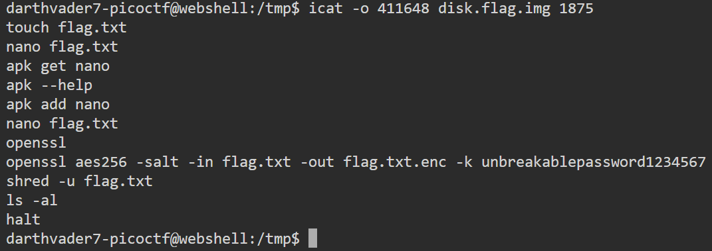
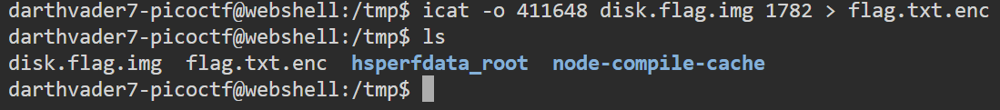
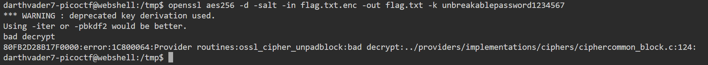
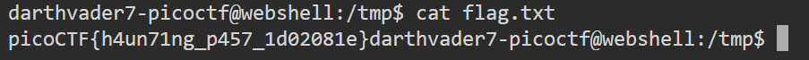

picoCTF 2022 - Operation Orchid - Writeup
< Back ⌂ HomeIntroduction
This writeup is for the Operation Orchid challenge which was part of the picoCTF 2022 Capture The Flag (CTF) tournament.
Link to the challenge: Operation Orchid (Note: Login required to view the challenge)
Challenge
The following is the challenge description:
Download the disk image and find the flag.
Note: if you are using the webshell, download and extract the disk image into /tmp not your home directory.
Attached file: disk.flag.img.gz
Tools Required
I used The Sleuth Kit tools along with other Linux command line utilities to complete this challenge. The following are The Sleuth Kit tools that I used in this challenge:
- mmls: for viewing the disk partition information.
- fls: for viewing the contents of the directories present in the disk image.
- icat: for viewing the contents of the files in the disk image.
I also used openssl for decrypting the flag file.
Solution
Let's analyze the attached file to find the flag.
Download the Challenge File
First, let's download the challenge file in the /tmp directory of our webshell session.
I used the following command to download the challenge file:
wget https://artifacts.picoctf.net/c/214/disk.flag.img.gz
This downloads the file named disk.flag.img.gz which is a gzip file. We need to unzip this file to get the disk image file.
Unzip the Challenge File
I used the following command to unzip the gzip file:
gunzip disk.flag.img.gz
View the Partition Table
Now that we have unzipped the gzip file, let's take a look at the disk's partition table to find out the main partition.
I used the following command to view the given disk image's partition table:
mmls disk.flag.img
The fifth partition named Linux (0x83) is the largest partition. Also, given its name, it looks like it is the main partition.
The Start value gives us our offset value for the main partition, which is 411648.
Exploring the Main Partition
Now that we have assumed that the fifth partition is the main partition, let's explore that partition further.
I used the following command to view the contents of the main partition:
fls -o 411648 disk.flag.img
In the fls command, I have provided the offset value as 411648 as inferred from the partition table.
Since I did not provide any inode number in the command's argument, the root directory of the partition is used.
From the image above, we can clearly see that there are multiple directories like etc, root, lib, etc. which are standard Linux directories. Hence, this proves that our assumption was spot on, and the third partition is the main partition.
Find the Flag File
Now that we have confirmed that the partition we are viewing is indeed the main partition, we now need to find the file that has our flag.
The challenge description does not provide any information about the flag file. Hence, let's assume that the file containing the flag has the word flag in its title.
Hence, let's search for a file that has the word "flag" in its title. I used the following command to do that:
fls -rp -o 411648 disk.flag.img | grep "flag*"
This command recursively searches (due to the -r tag) the partition (that starts at offset 411648) and prints the full path of the files (due to the -p tag) that has the word "flag" in its title (due to the grep command).

From the output of the above command, we can see that the file flag.txt.enc is present in the /root directory.
The inode number of the file is 1782.
However, the file has a .enc extension, which implies that the file is encrypted. We can also see that a file named flag.txt was deleted from the same directory, and the memory space has already been reallocated.
Let's try to output the flag.txt.enc file first. I used the following command to do that:
icat -o 411648 disk.flag.img 1782
This command outputs the contents of the file with the inode number 1782 (which is the inode number of flag.txt.enc file) present in the partition having the offset value of 411648.
It is clear from the output that the file has been encrypted and is also using a salt value. Hence, we need to find out the encryption algorithm used and also the key value to decrypt this file.
Find Encryption Algorithm and Key to Decrypt the Flag File
Since the flag file is encrypted, we need to decrypt it. In order to decrypt the file, we need to find the encryption algorithm and the key used.
Sometimes, due to mistake or lack of experience, users store key in the same directory as the encrypted file. Hence, let's explore the /root directory to find out any clues.
Remember from the first time we viewed the contents of the partition, that the inode number of the root directory is 472. I used the following command to view the contents of the root directory:
fls -o 411648 disk.flag.img 472
This command lets us view the contents of the the directory having the inode number 472 (which is the inode number of the root directory).

Unfortunately, there is no file storing the key used in encrypting the file in the root directory.
However, we can see that there is a .ash_history file which is a file that stores command history. The inode number of this file is 1875.
The .ash_history file stores the command history which contains the commands used in the same (root) directory. We may get the actual command used in encrypting the flag.txt file by viewing the contents of the .ash_history file.
I used the following command to output the contents of the .ash_history file:
icat -o 411648 disk.flag.img 1875
This command outputs the contents of the file having the inode number 1875 (.ash_history) present in the partition with the offset value of 411648.

From the contents of the .ash_history file, we can clearly see that the user has used openssl to encrypt the flag.txt file using AES256 algorithm and the key value of unbreakablepassword1234567.
This shows us that providing the key value in the same command is a bad practice as it exposes the key value via the command history. Instead, openssl allows us to enter the key value later during its operation which is more secure way to enter the key value.
Now that we have the exact command used to encrypt the flag.txt file, we just need to reverse it to decrypt the flag.txt.enc file.
However, before we decrypt the flag.txt.enc file, we first need to download the file to our own system (webshell session in my case) to conduct any operation on it. This not only makes it easier to do operations on the file, it is also a good practice since it avoids mofification of the disk image and preserves its integrity.
I used the following command to copy the flag.txt.enc file to my system:
icat -o 411648 flag.txt.enc 1782 > flag.txt.enc
This command outputs the contents of the file, using the icat command, having the inode number 1782 (flag.txt.enc) present in the partition having the offset value of 411648; and stores the contents in the flag.txt.enc file in my system's current working directory (which is /tmp in my case).
Now that we have the flag.txt.enc file copied in our system, it is time to decrypt it. I used the following command to decrypt it:
openssl aes256 -d -salt -in flag.txt.enc -out flag.txt -k unbreakablepassword1234567
This command decrypts (due to the -d tag) the input file (flag.txt.enc) using the AES256 algorithm with the key value (-k tag) of unbreakablepassword1234567 which was used to create the salt (-salt tag); and stores the decrypted text in the output file (flag.txt).
We received a warning saying that the deprecated key derivation is used. We can ignore this warning as the original encryption command did not use the latest secure key derivation either, and used the default deprecated version instead. Hence, during the decryption process, we should use the default version as well to successfully decrypt the text.
The Flag
Now that we have the decrypted flag.txt file, we can view the flag in the plaintext.
cat flag.txt
This command outputs the contents of the flag.txt file.
The flag value is picoCTF{h4un71ng_p457_1d02081e}.